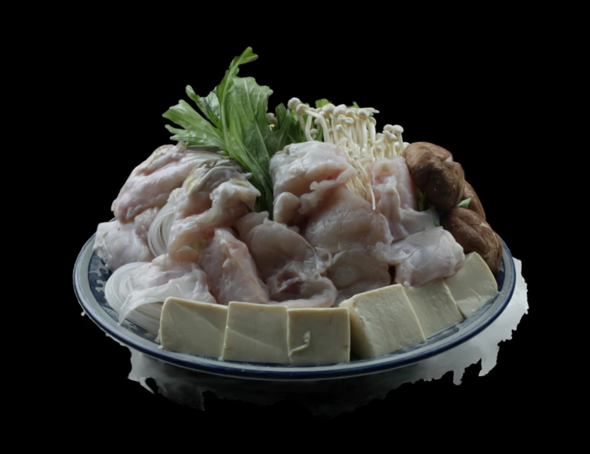

とらふぐ鍋セット
撮影時の写真からSplatfactoで復元しました。明るさ・彩度の追加補正はありません。
iPhoneで鍋セットを机に置く

Safariで開き、机に向けてください。AR版は学習した色を立体の表面に写しているため、切り身のツヤの位置は表面に固定されます。
同じ角度で見比べる

学習結果はSplatfactoで描画した画像です。AR用の立体は、書き出したGLBを同じ向きから描画しています。
撮影時の写真からSplatfactoで復元しました。明るさ・彩度の追加補正はありません。
Safariで開き、机に向けてください。AR版は学習した色を立体の表面に写しているため、切り身のツヤの位置は表面に固定されます。

学習結果はSplatfactoで描画した画像です。AR用の立体は、書き出したGLBを同じ向きから描画しています。